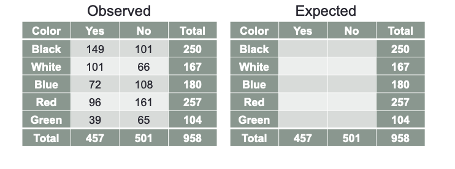

Code
import pandas as pd
import numpy as np
import matplotlib.pyplot as plt
from scipy.stats import chi2
x = np.arange(0, 20, 0.001)
plt.plot(x, chi2.pdf(x, df=4))Yang Chen
June 14, 2023
| Type of Predictors | Type of Response | Categorical | Continuous | Continuous and Categorical |
|---|---|---|---|
| Continuous | Analysis of Variance | Ordinary Least Squares Regression | Analysis of Covariance |
| Categorical | Tests of Association | Logistic Regression | Logistic Regression |
In categorical data analysis, we use qualitative data types which describes data whose measurement scale is by categorical.
Nominal
Ordinal
By examining distributions of categorical variables we can
Association exists between two categorical variables if distribution of one variable changes when the level of the other variable changes.
If there is no association, distribution of first variable is the same regardless of the level of the other.
| Happy | Sad | |
|---|---|---|
| Sunny | 87% | 13% |
| Stormy | 40% | 60% |
Hypothesis Statements:
\(H_0\): There is no association between Mood and Weather
\(H_a\): There is an association between Mood and Weather
\(H_0\): No Association
Observed freq \(=\) Expected freq.
\(H_a\): Association
Observed freq. \(\neq\) Expected freq.
Expected freq. are calculated by the formula
\[ \frac{\text{Row Total} \times \text{Column Total}}{\text{Sample Size}} \]
\[ Q_P = \sum_{i=1}^{R} \sum_{j=1}^{C} \frac{(Obs_{i,j} - Exp_{i,j})^2}{Exp_{i,j}} \]
\[ d.f. = (\#\text{Rows} - 1)(\#\text{Columns} - 1) \]
\[ Q_{LR} = 2 \times \sum_{i=1}^{R}\sum_{j=1}^{C} Obs_{i,j} \times \log{(\frac{Obs_{i,j}}{Exp_{i,j}})} \]
\[ d.f. = (\#\text{Rows} - 1)(\#\text{Columns} - 1) \]
A manager of a major car dealership wants to determine if the membership of a client in the loyalty program is associated with the color of car that they buy. With this knowledge, it potentially could help the sales staff show different cars to different clients to help improve the likelihood of a sale. The manager pull information from the previous years sales.
- Calculate the expected counts in the right table

Recall that expected frequency is given by the the product of row total and column total over sample size.
d = {
'black': {'yes': 149, 'no': 101},
'white': {'yes': 101, 'no': 66},
'blue': {'yes': 72, 'no': 108},
'red': {'yes': 96, 'no': 161},
'green': {'yes': 39, 'no': 65}
}
df_cars = pd.DataFrame(d).T
df_cars['total'] = df_cars['yes'] + df_cars['no']
df_cars['exp_y'] = df_cars['total'] * \
df_cars['yes'].sum() / df_cars['total'].sum()
df_cars['exp_n'] = df_cars['total'] * \
df_cars['no'].sum() / df_cars['total'].sum()
df_cars.head()| yes | no | total | exp_y | exp_n | |
|---|---|---|---|---|---|
| black | 149 | 101 | 250 | 119.258873 | 130.741127 |
| white | 101 | 66 | 167 | 79.664927 | 87.335073 |
| blue | 72 | 108 | 180 | 85.866388 | 94.133612 |
| red | 96 | 161 | 257 | 122.598121 | 134.401879 |
| green | 39 | 65 | 104 | 49.611691 | 54.388309 |
- Compute \(Q_P\) and \(Q_{LR}\) and summarize results.
def calculate_pearson(row):
return (row['yes'] - row['exp_y']) ** 2 / row['exp_y'] + (row['no'] - row['exp_n']) ** 2 / row['exp_n']
def calculate_likelihood(row):
return 2 * ((row['yes'] * np.log(row['yes'] / row['exp_y'])) + (row['no'] * np.log(row['no'] / row['exp_n'])))
q_pearson = df_cars.apply(calculate_pearson, axis=1).sum()
likelihood = df_cars.apply(calculate_likelihood, axis=1).sum()
print(f'Q_p: {q_pearson}, Q_LR: {likelihood}')Q_p: 44.76457096344832, Q_LR: 45.07972866310165Hypothesis Statements:
\(H_0\): No Linear Association
\(H_a\): Linear Association
\[ Q_{MH} = (n - 1)r^2 \]
\(\chi^2\) deteremines whether an association exists but it does not measure strength of association.
Measures of association do not measure whether an association exists. Some different measures of association include:
Odds ratio measure how much more likely, with respect to odds, a certain event occurs in one group relative to its occurrence in another group.
Odds of an event occurring is not the same as the probability that an event occurs.
\[ \text{Odds} = \frac{p}{1 - p} \]
| Yes | No | |
|---|---|---|
| Loyal | 20 | 60 |
| Non-Loyal | 10 | 90 |
d = {'yes': [20, 10], 'no': [60, 90]}
df_loyalty = pd.DataFrame(d, index=['Loyal', 'Non-Loyal'])
df_loyalty['prob_y'] = df_loyalty['yes'] / df_loyalty.iloc[:, :2].sum(axis=1)
df_loyalty['prob_n'] = df_loyalty['no'] / df_loyalty.iloc[:, :2].sum(axis=1)
df_loyalty['odds_y'] = (df_loyalty['prob_y'] / df_loyalty['prob_n']).round(3)
df_loyalty['odds_n'] = df_loyalty['prob_n'] / df_loyalty['prob_y']
df_loyalty.head()
print(
f'Odds Ratio, Loyal to Non-Loyal: {df_loyalty.loc["Loyal", "odds_y"] / df_loyalty.loc["Non-Loyal", "odds_y"]}')Odds Ratio, Loyal to Non-Loyal: 3.0When you have more than >2 categories in one or both variables we use Cramer’s V.
\[ V = \sqrt{\frac{(\frac{Q_P}{n})}{\min(\#\text{Rows} - 1, \#\text{Columns} - 1)}} \]
The same manager as the previous example now wants to know the strength of the relationship between the color of car and loyalty program. Use the appropriate measure of association to calculate this.